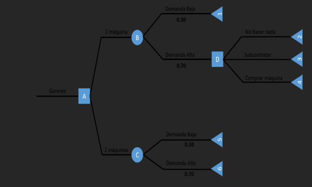
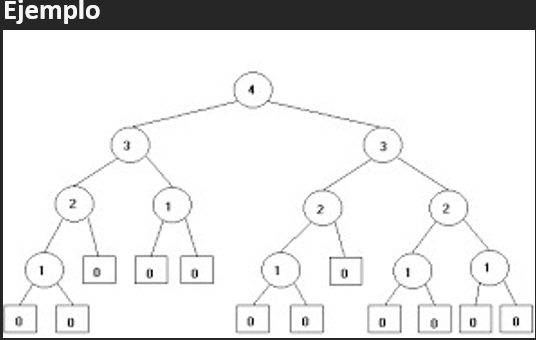

TEMAS A PRESENTAR:
Teoria De Arboles
un árbol es un caso particular de grafo, es un objeto que comienza con una raíz y se extiende en ramificaciones o lineas que terminan en un nodo. Representan la estructura no-lineal y dinámica de datos más importante en computación. Dinámica porque puede cambiar durante la ejecución de un programa y no-lineal porque a cada elemento del árbol pueden seguirle varios elementos. Es un conjunto de nodos y líneas. Un nodo es un elemento de información que reside en un árbol. Una línea es un par de nodos ordenados, u,v, y a la secuencia de lineas se le llama ruta (path).
Ejemplo:
Ejericicio:
Un gerente está tratando de decidir si debe comprar una máquina o dos. Si compra sólo una y la demanda resulta ser excesiva, podría adquirir después la segunda máquina. Sin embargo, perdería algunas ventas porque el tiempo que implica la fabricación de este tipo de máquinas es de seis meses. Además, el costo por máquina sería más bajo si comprara las dos al mismo tiempo. La probabilidad de que la demanda sea baja se ha estimado en 0.30. El valor presente neto, después de impuestos, de los beneficios derivados de comprar las dos máquinas a la vez es de $90,000 si la demanda es baja, y de $170,000 si la demanda es alta.
Si se decide comprar una máquina y la demanda resulta ser baja, el valor presente neto sería de $120,000. Si la demanda es alta, el gerente tendrá tres opciones. La de no hacer nada tiene un valor presente neto de $120,000; la opción de subcontratar, $140,000; y la de comprar la segunda máquina, $130,000.
a. Dibuje un árbol de decisiones para este problema.
b. ¿Cuántas máquinas debe comprar la compañía inicialmente? ¿Cuál es el beneficio esperado de esta alternativa?
Respuesta

Longitud De un Arbol
Es el número de arcos que deben ser recorridos desde la raíz hasta el nodo X. Cuando hablamos de longitud de un árbol, debemos diferenciar los siguientes conceptos: Longitud de camino,Longitud de camino interno,Longitud de camino externo.
Ejercicio
Longitud De camino
Se define la longitud de camino X como el número de arcos que deben ser recorridos para llegar, desde la raíz, al nodo X. Por definición, la raíz tiene longitud de camino 1, sus descendientes directos tienen longitud de camino 2 y así sucesivamente.
Ejercicio
Longitud de Camino Interno
Es la suma de las longitudes de camino de todos los nodos del árbol. En donde i = nivel del árbol, h = altura del árbol, ni = número de nodos en el nivel "i".
Ejemplo:
Ejercicio
Longitud de Camino Externo
Árbol extendido: es aquel en el que el número de hijos de cada nodo es igual al grado del árbol. Para que se cumpla esta condición si es necesario se le agregan nodos especiales al árbol, tantos como sea necesario para que se cumpla la condición. Nodos especiales: su objetivo es reemplazar las ramas vacías o nulas y no pueden tener descendientes.

Árbol Binario
Un árbol binario es un tipo de árbol en que cada vértice máximo puede tener dos hijos; su nodo raíz está enlazado a dos subárboles binarios disjuntos denominados subárbol izquierdo y subárbol derecho. Los árboles binarios no son vacíos ya que como mínimo tienen el nodo raíz. Árbol Binario Lleno Es aquel árbol en el que los nodos de cada nivel tienen sus dos hijos o ninguno (si es hoja).
Ejercicio:El 35 % de los estudiantes de un centro docente practica el fútbol. El 70 % de los que practican el fútbol estudia Matemáticas, así como el 25 % de los que no practican el fútbol. Dibuja el diagrama de árbol asociado a este ejercicio y asigna la probabilidad a cada uno de sus tramos
Respuesta
Árbol binario completo
Es aquel árbol binario lleno en que todas sus hojas están en el nivel n o n-1 considerando que para un hijo derecho hay siempre un hijo izquierdo. Por lo tanto, todo árbol binario lleno es completo, pero no la viceversa. Propiedades de Árboles Binarios
Recorrido de un Árbol binario Un recorrido en un árbol binario es Una operación que consiste en visitar todos sus vértices o nodos, de tal manera que cada vértice se visite una sola vez. Se distinguen tres tipos de recorrido: INORDEN, POSORDEN Y PREORDEN. En cada recorrido se tiene en cuenta la posición de la raíz (de ahí su nombre) y que siempre se debe ejecutar primero el hijo izquierdo y luego el derecho
Recorrido Preorden Preorden: (raíz, izquierdo, derecho). Para recorrer un árbol binario no vacío en preorden, hay que realizar las siguientes operaciones recursivamente en cada nodo, comenzando con el nodo de raíz: Visite la raíz, Atraviese el sub-árbol izquierdo,Atraviese el sub-árbol derecho
Recorrido Inorden: Inorden: (izquierdo, raíz, derecho). Para recorrer un árbol binario no vacío en inorden (simétrico), hay que realizar las siguientes operaciones recursivamente en cada nodo: 1. Atraviese el sub-árbol izquierdo 2. Visite la raíz 3. Atraviese el sub-árbol derecho
Recorrido Postorden: Postorden: (izquierdo, derecho, raíz). Para recorrer un árbol binario no vacío en postorden, hay que realizar las siguientes operaciones recursivamente en cada nodo: 1. Atraviese el sub-árbol izquierdo 2. Atraviese el sub-árbol derecho 3. Visite la raíz
Árbol Binario de Busqueda:Un árbol binario de búsqueda es aquel que tiene sus nodos con un orden definido, de tal manera que los datos del subárbol izquierdo son menores y los del subárbol derecho son mayores. Estos árboles tienen como particularidad la permisión de que se puedan realizar búsquedas de nodos o datos determinados, utilizando el método de búsqueda binaria de manera similar al usado en arreglos
Cantidades Escalares y Vectoriales Cantidad Escalar:
Esta especificada por un valor con la unidad apropiada
Ejemplo: Temperatura, Masa, Volumen, Tiempo
Estas cantidades pueden tener valores positivos, negativos o tener un valor cero
Sus operaciones matemáticas se realizan utilizando las reglas de la aritmética
Cantidad Vectorial:
Son aquellas que quedan totalmente definidas con un módulo, una dirección y un sentido.
Es el caso de la fuerza, la velocidad, el desplazamiento. En estas magnitudes es necesario especificar hacia dónde se dirigen y, en algunos casos dónde se encuentran aplicadas.
Todas las magnitudes vectoriales se representan gráficamente mediante vectores, que se simbolizan a través de una flecha.
Vector :
Un vector tiene tres características esenciales: módulo, dirección y sentido.
Los vectores se representan goemétricamente con flechas y se le asigna por lo general una letra que en su parte superior lleva una pequeña flecha
Modulo
está representado por el tamaño del vector, y hace referencia a la intensidad de la magnitud ( número). Se denota con la letra solamente A o |A|
Dirección:
Corresponde a la inclinación de la recta, y representa al ángulo entre ella y un eje horizontal imaginario. También se pueden utilizar los ejes de coordenadas cartesianas (x, y, z) como también los puntos cardinales para la dirección.
Sentido :
está indicado por la punta de la flecha. (signo positivo que por lo general no se coloca, o un signo negativo).
Operaciones Geométricas Vectoriales :
Suma de Vectores: Al sumar dos vectores se obtiene otro vector (vector suma o resultante). Para obtener el vector suma es necesario recurrir a lo que se conoce como “regla del paralelogramo”. Esto es, se construye un paralelogramo que
tenga los vectores como lados y se traza la diagonal del mismo para obtener el vector suma.
Resta Geométrica de Vectores
Para la resta se procede de la misma forma que la suma, pero el vector que resta se debe dibujar con sentido contrario, o sea el signo negativo cambia el sentido del vector. Luego el vector resultante es el que va desde el punto inicial del primer vector, hasta el final del vector que se le cambio el sentido
Teoria de Probalidad :
La probabilidad es el cálculo matemático que evalúa las posibilidades que existen de que una cosa suceda cuando interviene el azar.
Eventos :
Un evento se entiende como el acontecimiento de un hecho en proceso o por venir.
Se dice que es aleatorio, si no es posible determinarlo con exactitud. En todo caso, será posible predecirlo con un nivel dado de confianza.
Al evento también se le denomina un suceso o un fenómeno. Generalmente, se simula el evento por un conjunto de variables relacionadas entre si. Por lo tanto, un evento está representado con una o más variables vinculadas entre ellas.
Espacio Muestral:
En la teoría de probabilidades, el espacio muestral o espacio de muestreo (denotado E, S, Ω o U) consiste en el conjunto de todos los posibles resultados individuales de un experimento aleatorio.
Por ejemplo, si el experimento consiste en lanzar dos monedas, el espacio de muestreo es el conjunto {(cara, cara), (cara, escudo), (escudo, cara) y (escudo, escudo)}.
Un evento o suceso es cualquier subconjunto del espacio muestral, llamándose a los sucesos que contengan un único elemento sucesos elementales. En el ejemplo, el suceso "sacar cara en el primer lanzamiento", o {(cara, cara), (cara, escudo)}, estaría formado por los sucesos elementales {(cara, cara)} y {(cara, esucdo)}.
Espacio Muestral Discreto.
Podemos diferenciar entre dos tipos de espacios muestrales: discretos y continuos
Espacio Muestral Discreto: Son aquellos espacios donde el número de sucesos elementales es finito o infinito numerable.
Probabilidad Condicional :
Si tenemos dos eventos, A y B, la probabilidad condicional de que ocurra el evento A, dado que ha ocurrido el evento B, se representa como P(A|B), y se calcula de la siguiente manera: